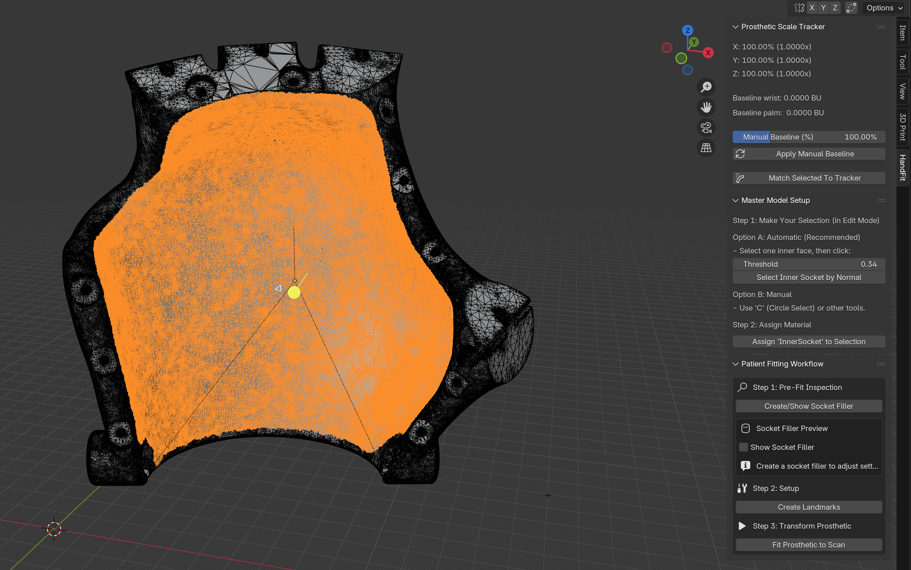
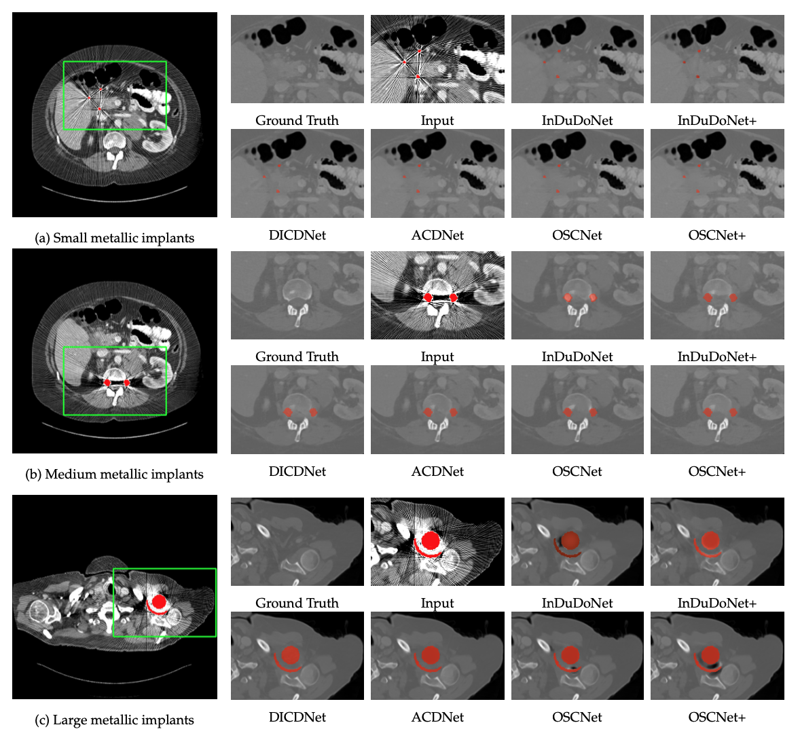

Projects

HandFit
A free Blender add-on that automates the customisation of 3D-printed prosthetic hands. Uses landmark-based alignment, anisotropic scaling, and shrinkwrap socket conformation to reduce fitting time from 30–60 minutes to under 5 minutes — with sub-millimeter precision across all 8 Kinetic Hand variants.

Deep Learning for Metal Artifact Reduction in CT Imaging
Bachelor thesis investigating deep learning architectures for metal artifact reduction (MAR) in CT scans. Compared dual-domain networks (InDuDoNet, InDuDoNet+) and image-domain methods (DICDNet) against state-of-the-art baselines. Explored supervised, unsupervised, and semi-supervised approaches to reduce streak artifacts while preserving anatomical detail.

Loan Calculator
An interactive loan calculator that computes monthly payments, total interest, and full amortisation schedules from user-defined inputs.

Shape Calculator
A Python geometry library that computes area and perimeter for a range of 2D shapes using clean object-oriented design and unit-tested logic.

Survey Page
A fully responsive survey web page with clean form UX, custom styling, and accessible markup.

Budget App
A personal finance tracking application for managing income, expenses, and savings goals. Currently in development.